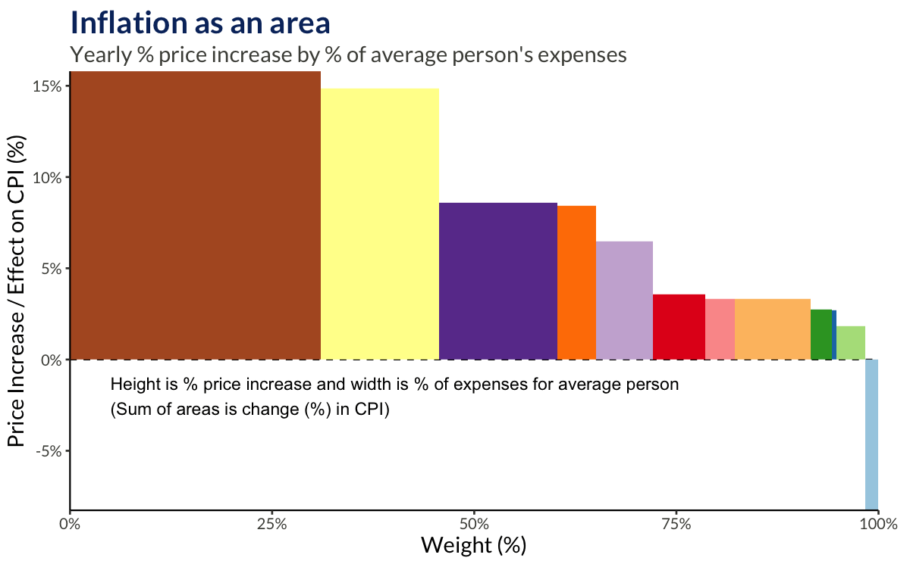
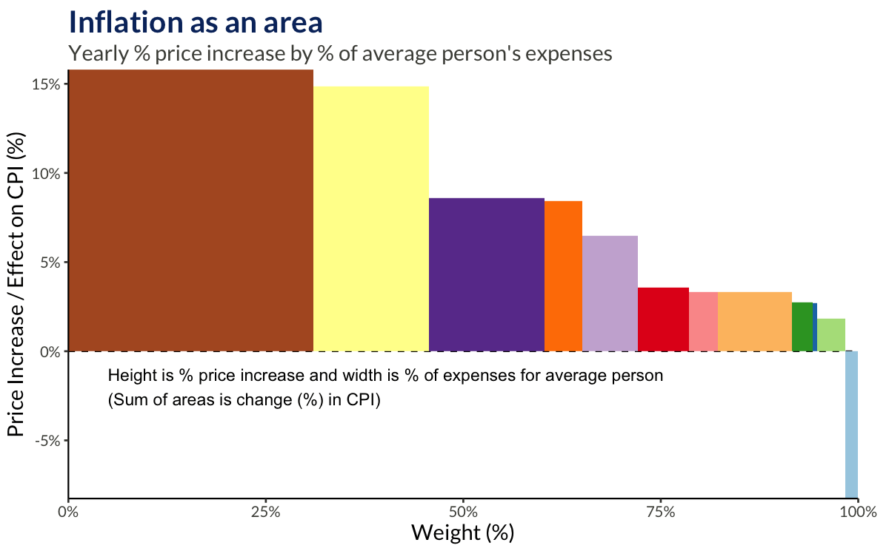

You Can Handle the Truth
Empowering people to gain insight from official data
Statistics Phd Student at HÍ
Statistician at Hjartavernd


Empowering people to gain insight from official data
Statistics Phd Student at HÍ
Statistician at Hjartavernd
